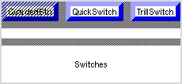

Guarded, quick and trill switches
VBTkit contains three variations on ordinary buttons (called switches in VBTKit).
The program
Switches.m3
constructs these three switches:
-
A guarded switch
protects its child, which is usually another button,
against inadvertent mouse clicks.
While a guard is displayed mouse clicks are not
forwarded.
To remove the guard, click on the button.
Thus clicking twice on a guarded button will press the button,
but a stray click will not.
There is a callback
associated with a guarded button which is invoked when the guard is removed.
-
A quick switch invokes the callback as soon as the mouse is pressed
and does not wait for the mouse button to be released like the other
switches.
-
A trill switch
is a switch that generates events repeatedly while the mouse is
down and in its domain.
When the mouse leaves the domain, event generation
is suspended until the mouse returns.
Four views of the application appear in the following images:
- Switches 1
-
 Switches 2
Switches 2
-
 Switches 3
Switches 3
-
 Switches 4
Switches 4
The first image shows
normal appearance of the program.
The guarded switch is covered with diagonal lines,
indicating that the guard is on.
Clicking in the switch removes the guard and calls the callback
(shown in the second image).
Pressing a mouse button in the quick switch immediately invokes the
call back.
This is shown in the third image, although this behavior
does not exhibit any different appearance than a normal switch.
In the four image,
the trill switch is shown in action,
the callback is called continually while the button on the mouse is pressed.